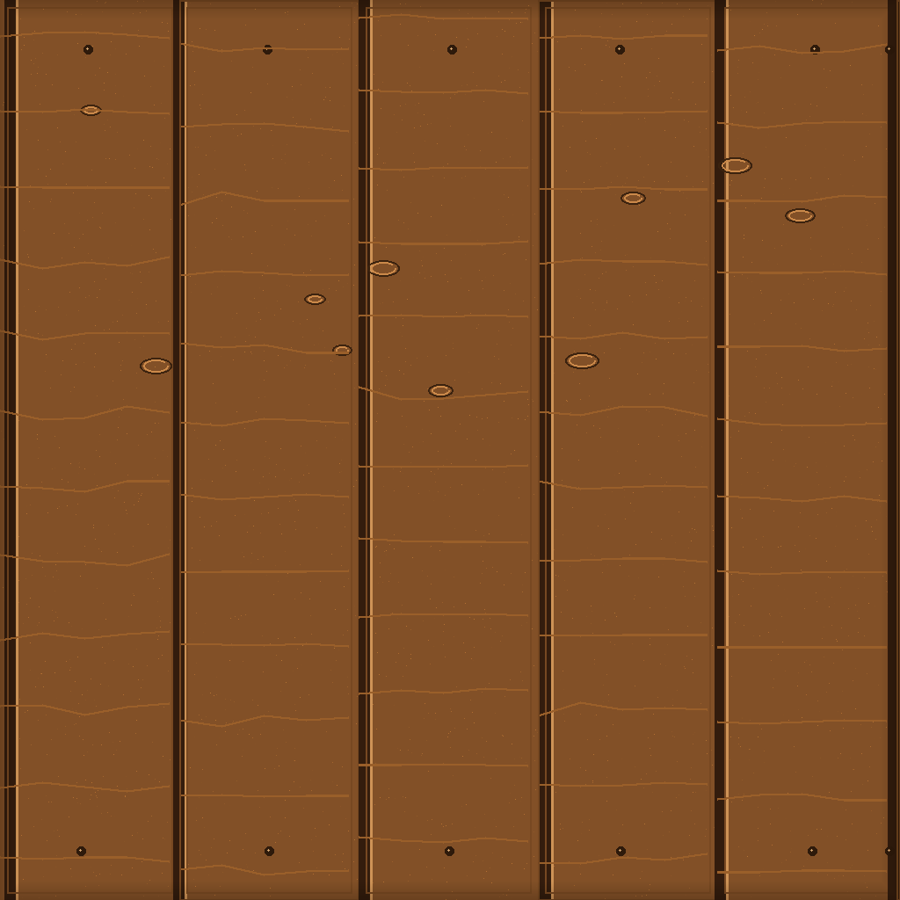
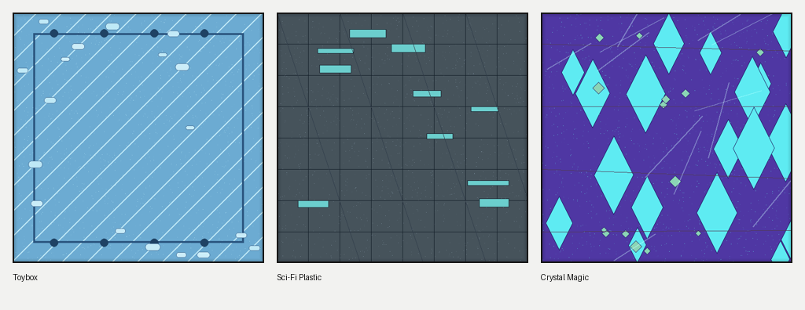

Low-VRAM runner
CLIP stays on CPU. GPT runs on the GPU, gets unloaded, then the shape decoder runs. That was enough to fit real runs on this laptop.
CubeLite Studio runs Cube 3D locally, logs VRAM and timing, checks mesh quality, rebuilds weak prop geometry when a repair template exists, and packages the recommended OBJ for Roblox Studio testing. It does not include model weights. It is not an official Roblox tool.
The goal was simple: make local Cube 3D runs less painful to test and compare.
CLIP stays on CPU. GPT runs on the GPU, gets unloaded, then the shape decoder runs. That was enough to fit real runs on this laptop.
Every run saves the prompt, profile, time, peak VRAM, triangle count, file size, logs, and any error.
Each mesh gets multi-angle renders and geometry checks. One nice angle is not enough for game assets.
Quality search runs several seeds, scores geometry, caps weak candidates, and writes a curation report before anything is treated as a showcase output.
For supported props, CubeLite can create a rebuilt mesh and mark roblox_import_this.obj as the recommended import file.
One laptop, real runs, no broad claim.
| Run | Profile | Peak VRAM | Triangles after cleanup | Notes |
|---|---|---|---|---|
| Official-style baseline | High memory path | ~5.98GB, OOM | n/a | Did not finish on the 6GB GPU. |
| Treasure chest candidate | 6GB Quality, seed 202 | 4.16GB | 14,000 | Best chest so far. Still needs a Roblox Studio import pass. |
| Wooden crate candidate | 6GB Quality, seed 404 | 4.16GB | 12,000 | Cleaner than the first crate run. |
| Low-VRAM baseline | Low VRAM | 3.93GB | varies | Good for testing the runner. Output quality varies. |
Real local outputs plus CubeLite finishing artifacts. Raw generations still get reviewed before they are treated as examples.

Rebuilt from the weak sword path into a full-length Roblox-style prop: long crystal blade, gold guard, wrapped grip, gems, and a recommended OBJ export.

Readable blocky prop. Better than the earlier chest, but the side view still needs cleanup.

The cleanest simple prop so far. Box shape is solid and the panel grooves read from several views.

Generated by the deterministic material provider. Exports also include normal, roughness, and metallic maps plus a texture QA score.

Style presets change both prompt wording and material output, so toy, sci-fi, and fantasy assets do not share one generic texture look.

Some angles work, some do not. I kept it because it shows why the multi-angle render matters.
The app works in dry-run mode without Cube 3D weights. Real generation needs the official Cube 3D repo and model files.
python -m venv .venv
.venv\Scripts\activate
pip install -r requirements.txt
python run_app.pypython run_benchmark.py --dry-runGood for checking the UI, reports, mesh analysis, and export folders before setting up Cube 3D.
python run_quality_search.py ^
--prompt "low poly wooden crate game prop" ^
--profile "6GB Quality" ^
--style "Roblox Low Poly" ^
--seeds 303 404Writes JSON and Markdown curation reports with geometry status, reject reasons, render paths, and export folders.
python run_texture_benchmark.py ^
--providers studio procedural diffusers ^
--model-id stable-diffusion-v1-5/stable-diffusion-v1-5 ^
--size 128 ^
--steps 2The studio provider is the default for clean Roblox-style materials. Diffusers is optional and recorded separately as experimental.